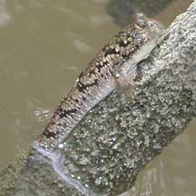
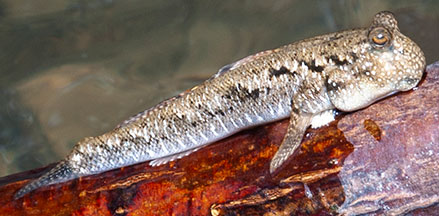
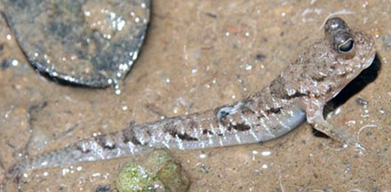
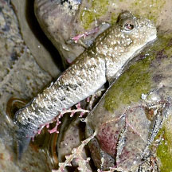
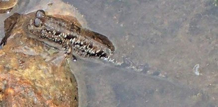

|
|
| fishes text index | photo index |
| Phylum Chordata > Subphylum Vertebrate > fishes > Family Gobiidae > mudskippers |
| Silver-lined
mudskipper Periophthalmus argentilineatus* Family Gobiidae updated Jan 2020 Where seen? This medium-sized mudskipper is sometimes seen in some of our mangroves. It is also called the Barred mudskipper. Features: 4-6cm, to about 9cm long, it has bright silvery fine vertical bars along the sides of the body. More about how to tell apart small mudskippers commonly found on our shores. The mudskipper is said to have a homing behavior and found in brackish mud flats in mangrove and nipa palm areas. Occasionally in the lower parts of freshwater streams. It actively moves back and forth between rock pools and air and is said to be able to stay out of water for more than a day if it is kept moist. |
 St John's Island, Jun 02 |
 Pulau Semakau, Mar 09 |
| What does it eat? It feeds on worms, crustaceans and insects. Silver-lined babies: According to Gianluca Polgar, the male mudskipper digs a burrow in mudflats not covered by mangrove vegetation. To attract a female he may jump with the fins spread or waggle his tail. If a female finds him suitable, she will enter the burrow to lay the eggs. Eventually, only the male guards the eggs, always remaining nearby and maintaining an air phase in the underground egg chamber. During high tide, when the nest is submerged, the male hides in the burrow. |
*Species are difficult to positively identify without close examination.
On this website, they are grouped by external features for convenience of display.
| Silver-lined mudskippers on Singapore shores |
On wildsingapore
flickr
|
| Other sightings on Singapore shores |
 Pulau Ubin, Jan 11 Photo shared by James Koh on flickr. |
 Sentosa Serapong, May 24 Photo shared by Loh Kok Sheng on facebook. |
 Pulau Semakau (South), Jan 20 Photo shared by Liz Lim on facebook. |
Links
|